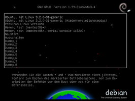
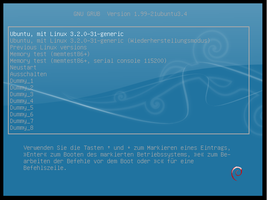
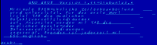

Aussehen
Dieser Artikel wurde für die folgenden Ubuntu-Versionen getestet:
Dieser Artikel ist mit keiner aktuell unterstützten Ubuntu-Version getestet! Bitte diesen Artikel testen und das getestet-Tag entsprechend anpassen.
Zum Verständnis dieses Artikels sind folgende Seiten hilfreich:
Editor - einen Editor öffnen
Terminal - ein Terminal öffnen
Pakete installieren - Pakete installieren
Der Bootmanager GRUB 2 kann auch im grafischen Modus arbeiten. Daraus ergeben sich einige Gestaltungsmöglichkeiten, mit denen das Aussehen des GRUB 2-Menüs verändert werden kann. Dieser Artikel stellt eine Einführung in das Thema dar und behandelt das grundlegende Wissen.
Fertige Hintergründe aus einem Paket¶
|  |  |
| spacefun-grub | moreblue-orbit-grub |
Folgendes Paket stellt verschiedene Hintergründe unter anderem auch für das GRUB 2-Menü zur Verfügung:
desktop-base (universe)
 mit apturl
mit apturl
Paketliste zum Kopieren:
sudo apt-get install desktop-base
sudo aptitude install desktop-base
Eingestellt werden diese Bilder durch das Alternativen-System mit der Angabe --config desktop-grub Nach einer Änderung muss GRUB 2 noch aktualisiert werden.
Entscheidet man sich für einen anderen Weg, um das GRUB 2-Menü zu gestalten, sollte das Paket deinstalliert werden, da das hiermit eingestellte Hintergrundbild teilweise sichtbar bleibt.
Hinweis:
Bei der Deinstallation wird je nach verwendeter Desktopumgebung das Metapaket gnome mit entfernt, was aber keine Auswirkungen hat.
Weitere Möglichkeiten¶
Es ist auch möglich, das GRUB 2-Menü mit anderen Hintergrundbildern oder Farben zu gestalten. Diese persönliche Gestaltung des GRUB 2-Menüs kann auf zwei verschiedenen Wegen erfolgen. Was ist mit welcher Methode möglich?
| Zwei Wege zum angepassten Boot-Menü | ||
| Einfache Konfiguration | Erweiterte Konfiguration | |
| Andere Schriftart | eingeschränkt | |
| Farben für Hintergrund/Schrift | ||
| Hintergrundbild | ||
| Freie Textwahl | ||
| Das Boot-Menü gestalten | Farbgebung | Rahmen, Icons für Bootmenüeinträge, Schriftarten/größen, ... |
| Frei positionierbare Text- oder Grafik-Elemenete | ||
| grafische Zeitanzeigen | ||
Grundlagen und Bereiche, die beide Möglichkeiten bieten, werden in diesem Artikel beschrieben. Wie man die Einstellungen vornimmt, wird in den jeweiligen Unterartikeln beschrieben.
Einfache Konfiguration¶
Bei der einfachen Konfiguration werden die Einstellungen in den Konfigurationsdateien von GRUB 2 vorgenommen. Nach jeder Änderung muss GRUB 2 aktualisiert werden.
Der Artikel GRUB 2/Aussehen - einfache Konfiguration beschreibt das weitere Vorgehen. Vorher sollte man sich jedoch mit dem Grundwissen (siehe unten) vertraut machen.
Erweiterte Konfiguration¶
Die erweiterte Konfiguration bietet deutlich mehr Freiheiten, das GRUB 2-Menü anzupassen. Dazu wird ein „Thema“ erstellt, welches aus einer Textdatei (Konfigurationsdatei), Schriftarten, Grafiken und Icons bestehen kann. Diese Dateien legt man alle im Ordner /boot/grub/themes/NAMEdesTHEMAS ab.
Der Artikel GRUB 2/Aussehen - erweiterte Konfiguration beschreibt die weitere Vorgehensweise. Auch hier sollte man sich vorher mit dem Grundwissen vertraut machen (siehe nächster Abschnitt).
Grundwissen¶
Auflösung¶
Auflösungen ermitteln¶
Beim Booten versucht GRUB automatisch eine geeignete Auflösung zu finden. Normalerweise wird die größtmögliche Auflösung eingestellt. Möchte man eine andere Auflösung sind die folgenden Abschnitte zu beachten.
In der GRUB 2-Konsole¶
Man startet das System neu und wechselt im Auswahlmenü des Bootmanagers mit einem Druck auf die Taste C in die GRUB 2-Konsole und gibt folgenden Befehl am Prompt (grub> _ ) ein:
vbeinfo
Ab Version 2.x - also Ubuntu 14.04 - lautet der Befehl in der GRUB 2-Shell:
videoinfo
Man erhält eine mehr oder weniger lange Liste, die je Zeile u.a. folgende Werte enthält:
[...] 0x123 800 x 600 x 24 Direct, mask: 8/8/8/0 pos: 16/8/0/0 0x11b 1280 x 1024 x 24 Direct, mask: 8/8/8/0 pos: 16/8/0/0 [...]
Die hier beispielhaft markierten Werte sind die auf dem jeweiligen System möglichen Auflösungen und Farbtiefen. Mit der Esc -Taste gelangt man wieder in das normale Auswahlmenü des Bootmanagers.
Mittels hwinfo¶
Bei einer älteren Version von GRUB 2 (1.99 oder älter) installiert[3] man das Paket
hwinfo (universe, bis einschließlich Ubuntu 13.04)
mit apturl
Paketliste zum Kopieren:
sudo apt-get install hwinfo
sudo aptitude install hwinfo
und lässt sich im Terminal [2] mit
sudo hwinfo --framebuffer
die relevanten Informationen anzeigen. Man erhält eine mehr oder weniger lange Liste, die je Zeile u.a. folgende Werte enthält:
[...] Mode 0x0322: 800x600 (+3200), 24 bits Mode 0x0323: 1024x768 (+4096), 24 bits [...]
Die hier beispielhaft markierten Werte sind die auf dem jeweiligen System möglichen Auflösungen und Farbtiefen.
Auflösung einstellen¶
Achtung!
Es dürfen nur Auflösungen eingestellt werden, die die Grafikkarte und der Monitor auch beherrschen, um Schäden am Gerät zu vermeiden.
Die Auflösung im Grub-Menü wird in der Datei /etc/default/grub festgelegt. Dazu öffnet man die Datei mit einem Editor mit Root-Rechten [1] und passt die Auflösung des Monitors mit den zuvor ermittelten Werten an:
GRUB_GFXMODE=800x600x24 GRUB_GFXPAYLOAD_LINUX=keep
Die Werte hinter GRUB_GFXMODE= entsprechen BREITExHÖHExFARBTIEFE wobei die Angabe der Farbtiefe nicht zwingend erforderlich ist.
Schriftgröße der Standardschrift¶
Je nach Einstellung der Auflösung erscheint die Größe der Standardschrift unterschiedlich. Grundsätzlich gilt: Je geringer die Auflösung, desto größer die Schrift.
Schriftarten¶
GRUB 2 verwendet für die Darstellung von Schriften ein eigenes Format (.pf2), bringt aber von Haus aus ein Werkzeug mit, um Schriftarten in das eigene Format zu verwandeln.
|  |
| Fehlerhafte Schriftart (Beschreibung) |
Achtung!
Je nach verwendeter Schriftart kann es zu schwerwiegenden Fehlern im GRUB 2-Menü kommen. Mehr dazu findet man in den jeweiligen Konfigurations-Artikeln.
Die grundsätzliche Befehlssyntax lautet[1]:
grub-mkfont -s GRÖSSE -o AUSGABEDATEI PFAD/ZUR/ORIGINALDATEI
Beispiel:
grub-mkfont -v -s 8 -o dejavu_sans_8.pf2 /usr/share/fonts/truetype/ttf-dejavu/DejaVuSans.ttf
Dieser Befehl erstellt die Datei dejavu_sans_8.pf2 im aktuellen Verzeichnis mit der Größe von 8 Pixeln aus der Datei /usr/share/fonts/truetype/ttf-dejavu/DejaVuSans.ttf.
Wo die einzelnen Originalschriftarten gespeichert sind, kann im Artikel Schriften nachgelesen werden.
Hinweis:
Die oft in diversen Foren genannte Option --range=0x0-0x7f beschränkt den Zeichensatz auf Unicode Basis-Lateinisch und enthält deshalb keine deutschen Umlaute. Möchte man den Zeichensatz und damit die Dateigröße minimieren, sollte die Option mit diesen Werten verwendet werden: --range=0x0-0x257f
 Übersichtsartikel
Übersichtsartikel
{kind=link}
- Erstellt mit Inyoka
-
 2004 – 2017 ubuntuusers.de • Einige Rechte vorbehalten
2004 – 2017 ubuntuusers.de • Einige Rechte vorbehalten
Lizenz • Kontakt • Datenschutz • Impressum • Serverstatus -
Serverhousing gespendet von